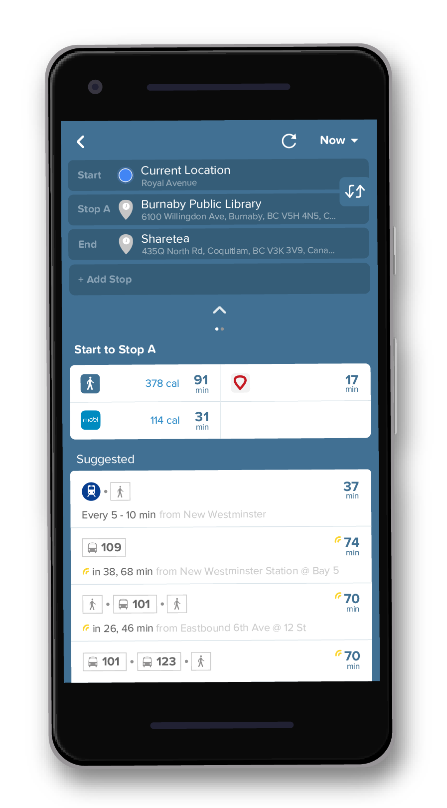
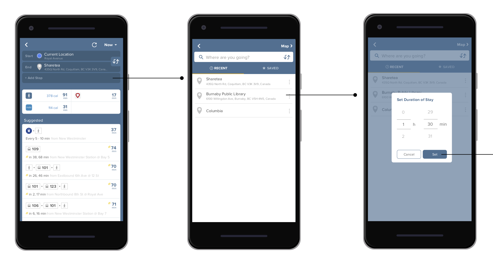
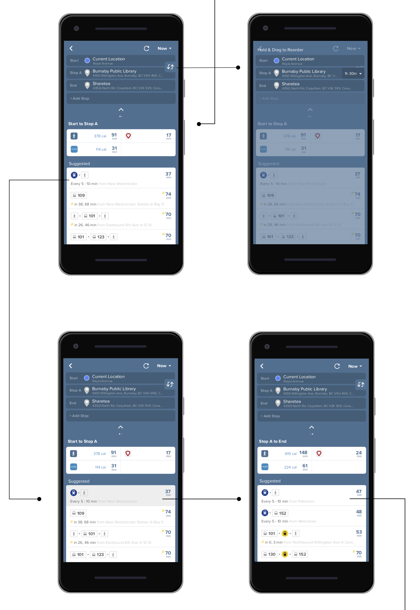
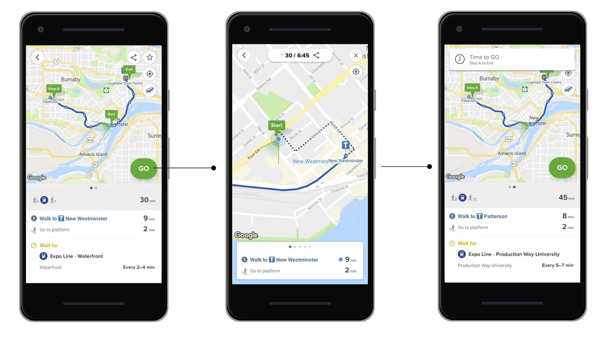

Research
Through both secondary research of reading reviews online, and conducting an interview with a Citymapper user in Vancouver, we found that commuters love the Citymapper app because the user interface is easy to work with and certain features that Citymapper offers such as “offline mode” and “Sharing our Journey”. However, through deeper research we found some pain points that
Citymapper users experience and brainstormed through ideas that we can add as a feature to Citymapper. Our final idea was “Plan a Trip” feature. The reasoning behind this feature is because many Citymapper users especially travellers, would like to plan their whole day trip but is forced to save multiple trips of Point A to B instead of having just one saved trip with many stops to go through the day.
"Plan A Trip" Feature

The “Plan A Trip” feature allows users to plan their trip beforehand. This feature unlocks users to freely add as many stops to their trip instead of just having a start and destination points. The users can plan their trip by adding how many hours they want to spend at each stop point and simply reorder the stops. The goal of this feature is to plan the journey ahead of time with the users’ preferred transportation method. By saving their trip, they can access their planned trip with no data and even share the trip with others.
Wireframe

Adding Stop
"Add stop" will lead them to the search page and once a destination is set, user will be able to set the time they want to spend in the stop.

Reorder + Selecting Transportation Method
Users can reorder their stops and select different transportation method for different routes.

GO!
Once everything is set, Citymapper will do everything else.
Challenges
User Research: Although Citymapper are loved by many, in Vancouver it is not popular. It was hard to get primary research on the app. We were forced to rely on secondary research.
Solution: I started to use Citymapper whenever I commute. This way I would be able to identify what is working and what can be added to the app.
Reflection
This project has improved my research skill and interaction design skill. I believe, the work my teammate and I have created for this app is valuable because throughout the 3 weeks span of this project, we are able to deeply learn about the app. It was a great chance for us to tackle an uncommon app in our society.